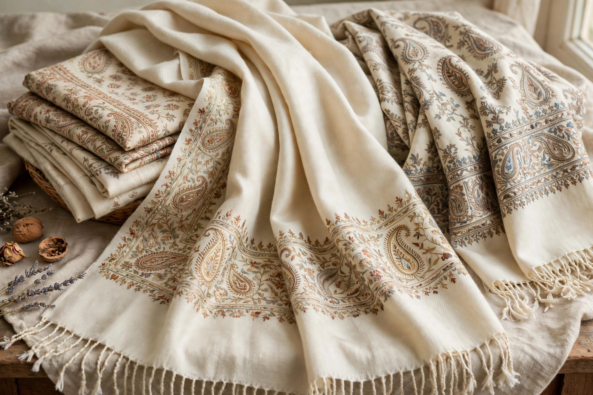

Pashmina
| Pashmina | |
| Type | Fine cashmere wool |
|---|---|
| Source animal | Changthangi (pashmina) goat |
| Region | Kashmir, Ladakh, Nepal |
| Fibre diameter | 12–16 microns |

Pashmina (from Persian pashm, "wool") is a fine variety of cashmere wool obtained from the soft undercoat of the Changthangi goat, a breed raised at high altitude in Ladakh and the Himalayan regions. Pashmina textiles — above all shawls — have been woven in Kashmir and Nepal for centuries.
Production
The goats grow a thick winter coat against Himalayan cold; in spring the downy underfleece is combed out by hand. The fibres, only 12–16 microns thick, are too delicate for power looms and are traditionally spun and woven by hand. A single shawl can take weeks of skilled work.
History and trade
Kashmiri shawls were prized by Mughal emperors and became fashionable in Europe in the late 18th and 19th centuries — Empress Joséphine of France famously owned hundreds. The word "pashmina" has since been loosely applied to many shawls and blends, and Kashmiri producers have sought geographical-indication protection for genuine hand-made pashmina.